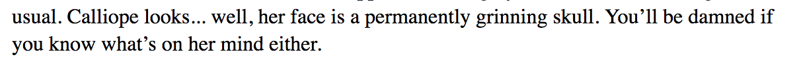
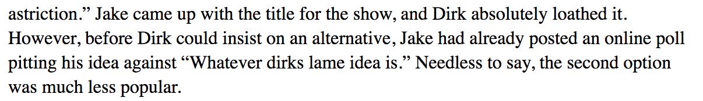
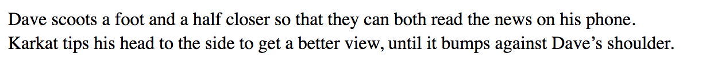
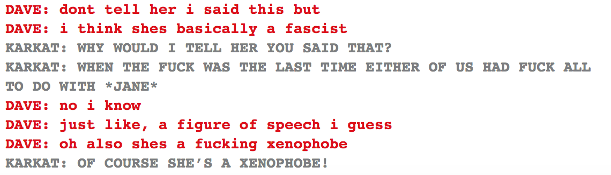
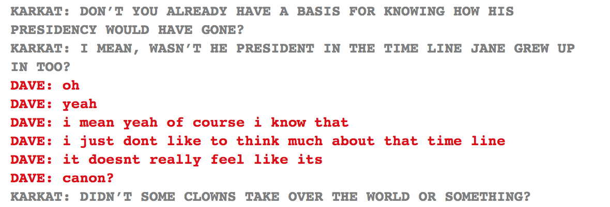

God damn whoever wrote this scene. This is so good. We all saw Obama on the character list at the beginning of the prologue, so we all knew he would be in the White House, but what perfection to announce Obama. Is. Here. with a god tier Hope outfit.
I’ve seen so much spoiler art, where the fuck is the art of Obama in Hope pajamas?
Do we know what symbol this is? Everything I can think of from the Homestuck universe would be something I would expect Dave to recognize. Maybe it’s established in Meat? I feel like I’m missing something.
Obama is fucking with Dave here? Classified would be meaningless thousands of years in the future, after the annihilation of the United States and any organization that would classify information?
Also a decent chance that Obama is fucking with Dave. He probably knew about the shitty statues of liberty, since he knew alpha Dave and was the one to rig up the transportalizer in a White House surrounded by them. But Obama saw the chance to make Dave feel even more awkward and he took it, legend that he is.
Just like, more fucking great writing for this scene. Dave could have outright said he loves Karkat right here, and it wouldn’t evoke that Davekat feeling as much as Dave saying he loves his wife.
Dave just came out to Obama, I can’t. I can’t even.
(And then I remembered all the rumors that went around about Obama being secretly gay, and the moment is ruined. Conservatives ruin everything.)
Wow the robot body in Dirk’s basement suddenly just got more disturbing, not less. And the fact that that’s where he left his suicide notes?
Obama directly linked the Ultimate Self with Hope, so I wonder if the body wasn’t for Dirk but for Jake? Although Dirk (apparently) had a lot of contempt for Jake by the time he killed himself, it’s hard to imagine that a Hope transformation could be done by a Prince of Heart, at least not one that ends well (and it certainly doesn’t seem to end well).
This is most definitely foreshadowing the Meat storyline where Dirk is the bad guy, but there’s a part of me that is really glad that Dave’s abuser doesn’t seem to feature much in his Ultimate Self. Not that Dave seems to associate Dirk and Bro strongly at all, but they are versions of the same person. Does this mean Dave is leaving his childhood abuse behind? I really hope so.
Also it just occurred to me that if the Ultimate Self contains all other versions of that person, Ultimate Dirk contains the man who abused Dave, and now I feel ill.
Everything going on in this entire conversation is fucking mindblowing.
Okay so when I was liveblogging, at one point I said that I really got the feeling that there would be another villain after Lord English. I don’t remember the exact point or I would hunt it down. But everybody shot me down, because nooo Lord English is definitely the biggest deal, there’s not going to be a big reveal of someone even worse.
I would appreciate an apology.
(I haven’t read Meat yet, I am making this post with full knowledge that I could turn out to be hilariously wrong, and you would all know that wrongness the moment you read this.)
I’ve been thinking about whether this whole thing could be a Muse of Space thing. I really wonder what it looks like in universe, for alt!Calliope to suddenly be speaking not with dialogue but with narration. For us it’s obvious, because we’re used to the separation and we can see it visually, but Aradia also had an experience where alt!Calliope stopped speaking and started narrating. I don’t think it’s a Space thing to suddenly be part of the narrative voice, rather than a character speaking, because I can’t relate it to Kanaya or Jade’s powers. Is it a Muse thing? Like how Lord English is always Already Here, which is time like but beyond anything that Aradia or Dave can accomplish, can a Muse of Space become the story rather than being a character in it?
Also it is interesting that they use the story of the Sufferer here, with alt!Calliope using the text color that matches his blood color. There’s always been a connection between the cherubs and the Sufferer/Karkat that I don’t think got enough attention. I sort of assumed that we weren’t getting more of it because Alternian lore is more a part of Hiveswap than Homestuck now, and that’s where we’ll learn more about the limebloods (if we ever do, hope springs eternal) and from there the cherubs. But also this feels like foreshadowing, and you all know whether or not it is or if the foreshadowing is for something else related to the Sufferer or if it’s just the story they chose for this moment, but I’m taking a moment to meditate and reveal my ignorance.
Also also they really said Fuck Off to the pacing here. The story was moving along at a pretty good clip, and then alt!Calliope pulls it to a sudden stop to explain to us how all stories are propaganda with a speaker and a point of view, no matter how objective they feel.
*claps hands and stomps feet* CALMASIS CALMASIS CALMASIS
I don’t think the writers spent much time around finicky fabrics because you can most definitely wrinkle things pretty easily by sitting in them. You can get real bad creases that way.
The whole thing with Rosebot feels too depressing to liveblog. I mean, her ironing Dirk’s dumb shorts? Fuck that noise.
AND THAT’S THE END OF CANDY! I actually sort of really liked it, especially once we separated from Jane more.
God DAMN I missed the text commands in Candy. I did not even realize how much I missed them until they really came back.
I’m guessing they’re a signifier of Canon? I think we lost them all throughout Candy, except when Dirk killed himself, which according to him was the only canonical action in that.

In some places the narration is really weird. Because like. We have seen official art of Calliope and we know her face is not permanently grinning. We know she has expressions even though her face is skull like. Are we supposed to take this as evidence that John sucks at interpreting her expressions, or that all the other art wasn’t accurate?

I do not always like Jake but I LOVE JAKE RIGHT HERE. Hell yes Jake. Shut Dirk down. No wonder Dirk wound up being a dick to Jake when Jake is owning him publicly like this.

I know this is the Epilogue where Davekat is canon but my brain immediately went There is no heterosexual explanation for this.

So apparently John choosing to leave canon means that Dave is less of a milquetoast on the subject of Jane’s xenophobia?

So the Insane Clown Posse presidents were secretly foreshadowing Trump. Who would have thought.